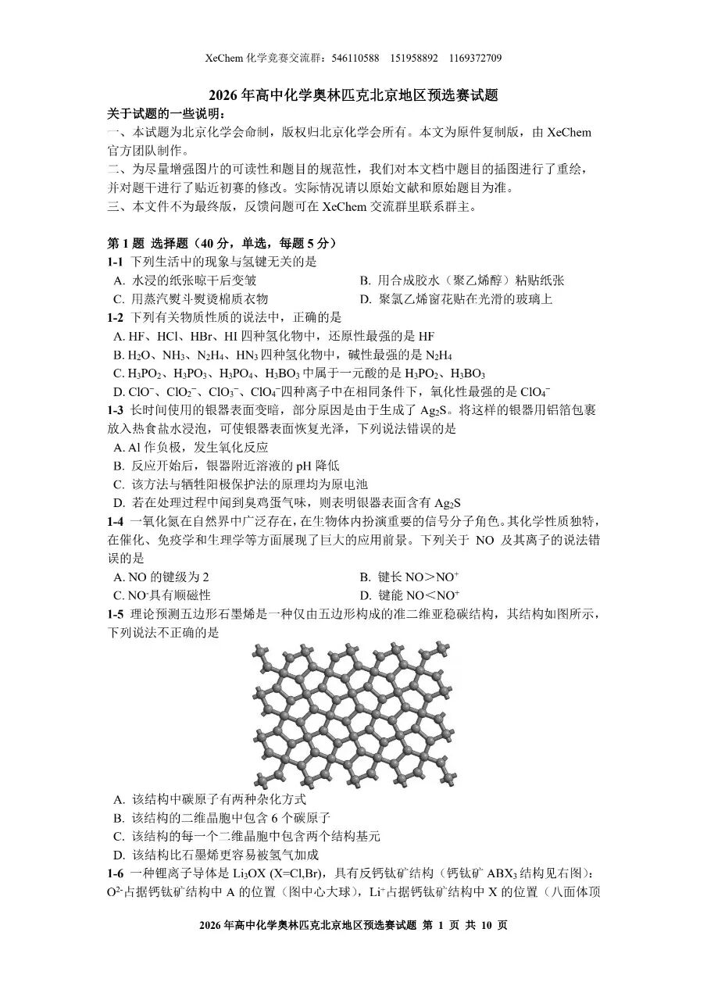
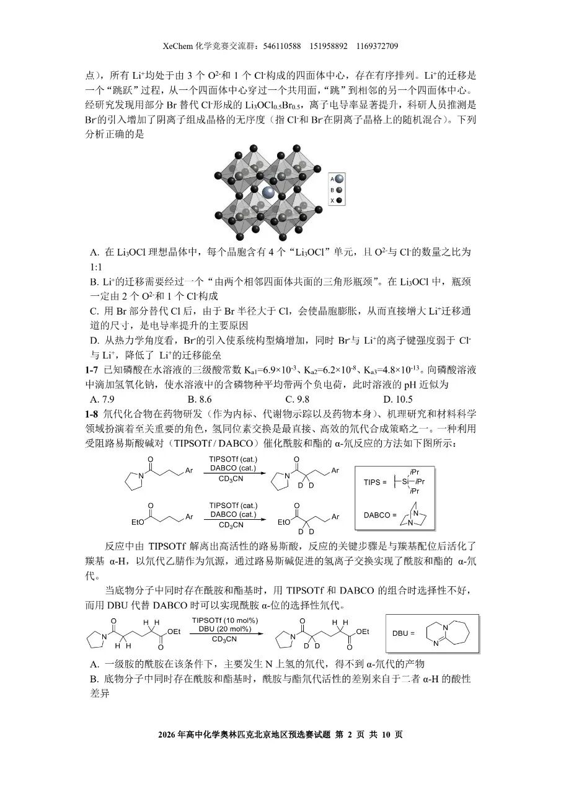
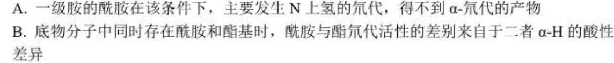
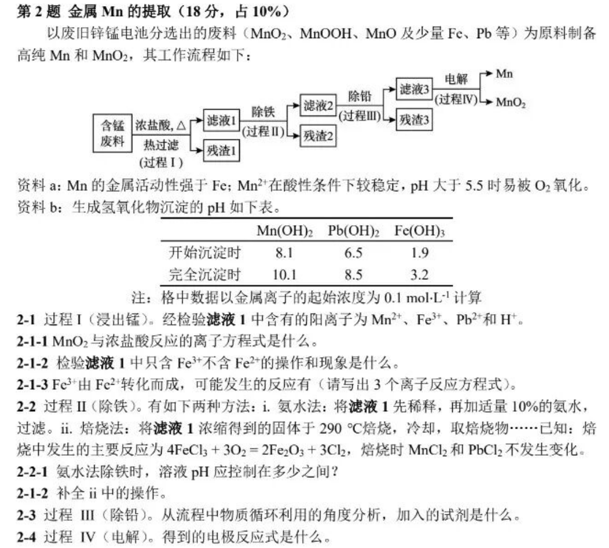
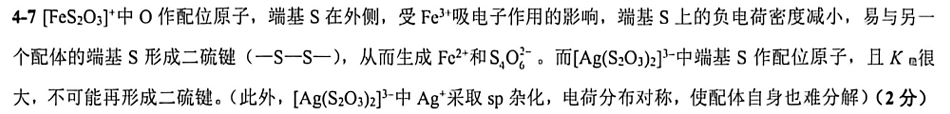
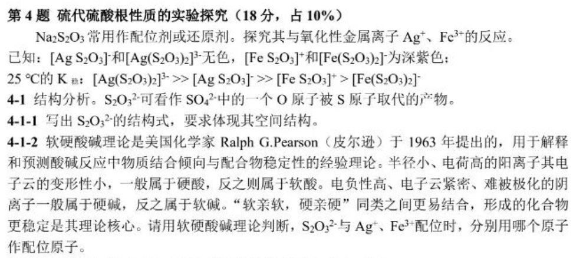
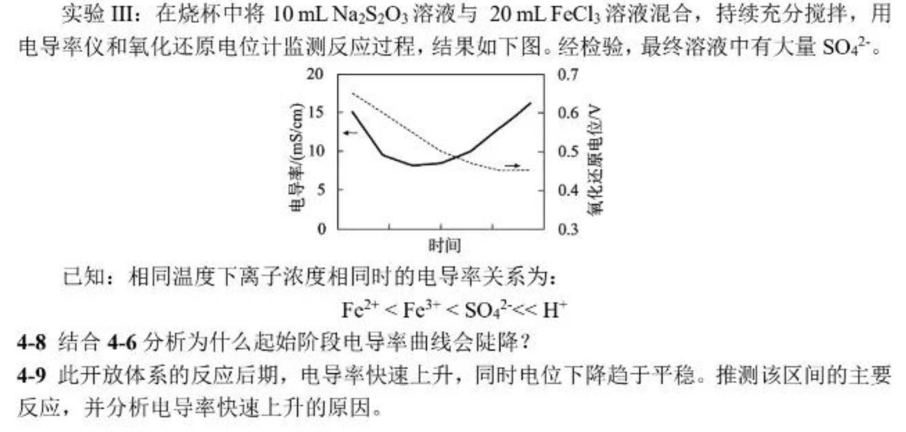
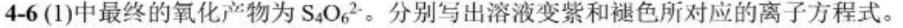
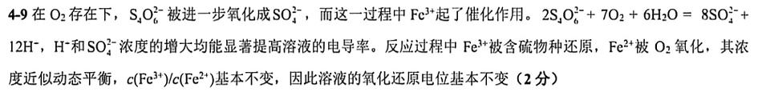

2026 年高中化学奥林匹克北京地区预选赛,没有难绷的元素推断,全是化学基本理论的运用与热力学计算.

前五题答案:DCBAC
1-1简单题,不解释.
1-2:简单的元素性质
A:还原性顺序与阴离子元素非金属性顺序相反: B:通过与配位的能力判断碱性顺序:
氮元素电负性小,碱性最强毫无疑问.
由于的吸电子诱导效应,碱性弱于,但又强于.
电离后形成的阴离子有两个离域派键,所以呈酸性,碱性最弱
C无比正确,D氧化性最强(对称性低,键能小)
1-3简单电化学,不解释.
1-4: 分子的电子排布式: 
复习一下,分子轨道的基本内容:
KK表示有两对电子分别处于两个原子K层的1s轨道.相互重叠大的主要是原子的外层轨道,因此原子内层1s电子基本上维持了在原子轨道中的状态
B,C,N等元素由于2s,2p轨道能量差距小,会发生sp混杂,使(但注意π反键轨道和σ反键轨道能量顺序不改变)
这个有什么作用:
- 解释的顺磁性
- 影响分子HOMO是什么
- 解释有两个π键,无σ键
A:键级为2.5
| 键级 | |||
|---|---|---|---|
| 2.5 | 3 | 2 |
键长顺序与键级相反,键能顺序与键级相同
B正确,D正确.
分子电子排布式: 分子内有单电子,故有顺磁性(同理也有顺磁性),C正确.综上选A
1-5 1-6晶体题仍然坐牢,直接跳过
6-8答案DCB

1-7简单水溶液计算,使用分布分数
敲一下Casio,解得
或者由于,也可以
1-8: 
A:酰胺基中键的酸性显著强于键,所以在Lewis碱作用下,中氢离子会优先解离,然后在氘代试剂环境下发生氢氘交换.
B:观察DBU作用下的反应,发现酰胺的先发生了氢氘交换,而酯基没有变化.这似乎与酸性的顺序相反?

反应中由TIPSOTf解离出高活性的路易斯酸，反应的关键步骤是与羰基配位后活化了羰基，以氘代乙腈作为氘源，通过路易斯碱促进的氢离子交换实现了酰胺和酯的-氘代
问题就出在这里.由于羰基氧碱性:酰胺>酯(为什么?通过共振式判断),所以酰胺的羰基氧更容易和Lewis碱配位,从而形成氧鎓离子,大大增强了酸性,导致发生氘代,而不是因为本身酸性强.B错误
本节由 Claude（Anthropic 开发的 AI 模型）补充，附在作者解答之后，并非原作者所写。
更正（Claude 补充） 结论正确，但"和 Lewis 碱配位"应为"和 Lewis 酸配位"。羰基氧本身是 Lewis 碱，与 TIPSOTf 产生的硅基 Lewis 酸配位形成氧鎓离子后，-H 的酸性大大增强，再由体系中的 Lewis 碱拔去。酰胺羰基氧的碱性更强（氮的孤对电子共振给电子， 上的氧带部分负电荷更多），所以酰胺优先被活化。这正是 C 选项"Lewis 酸碱协同"的含义。

Lewis酸碱加合物是什么?按照我的理解,是Lewis酸和Lewis碱结合,协同进攻底物,一个配位酰胺羰基氧,一个拔,促成催化下酰胺的氘代(否则正常情况下,是酯基氘代),C正确.
D.质子源酸性过强,可能直接质子化所用的Lewis碱,所以D正确.

2-1简单题
2-2-1 完全沉淀,同时不能让被氧气氧化,也不能让沉淀,所以调pH 3.2-5.5
2-2-2 加水溶解,过滤,再加盐酸酸化至pH小于5.5
2-3 不能通过沉淀Pb的方法除铅(否则完全沉淀时,已开始沉淀),因为Mn的金属活动性强于Fe,所以加Mn还原.
3热力学与动力学简单计算,跳过


4-7 要从动力学(记得联系前面对配位原子的设问)和热力学两个角度进行说明


4-8 分析主要矛盾(不要只写下降,考虑水解平衡的移动)

- 使离子浓度降低
- 同时水解平衡逆移,也减小
4-9 通过溶液的氧化还原电位,知基本不变(为什么?0.4-0.5的氧化还原电位只能可能是产生的)
而在后期,溶液中发生的反应显然是氧化还原反应(可能的配位反应在一开始已经发生过了,且最后生成硫酸根),又考虑到开放体系,只能说氧气做氧化剂.



5-1 是坑题(图中应为,考试时也是印刷错误)
注意中配体不是水,而是(对于2的书写很重要)
在书写配位化合物的化学式时,为避免混淆,中性配体和阳离子配体的化学符号,必要时要用括号括起来,要注意理解其所代表的含义 双氮 双氧 表示中性分子 不加圆括号 表示过氧根
本节由 Claude（Anthropic 开发的 AI 模型）补充，附在作者解答之后，并非原作者所写。
勘误（Claude 补充） 式 2 左边应为 ，原子才守恒：
另外核对了式 1、3、4，电荷、原子和得失电子都守恒。式 1 中 Cu 得 1 e⁻、 失 1 e⁻ 生成 ；式 4 中 Cu(I) 失 1 e⁻、 得 1 e⁻ 生成 。
对于含自由基物种的离子反应,只要电荷守恒和原子守恒应该就行了

千万注意Lewis结构式要用方括号表示电荷,而不是标形式电荷.

一定要理解的浓度不变(因为上图的平衡和物料守恒),但是受硫氰根浓度影响.
5-5 为反应催化剂,浓度增加反应速率加快,振荡周期缩短;
浓度增加,反应①②速率加快,自由基生成速率加快,自由基引发的鲁米诺发光速率增加,暗时荧光强度增加;
反应③速率几乎不变(或降低,硫氰根与铜离子反应,浓度降低),一个振荡周期内积累生成浓度减小,反应④生成速率降低,自由基引发的鲁米诺发光速率降低,亮时荧光强度降低
5-6 硫氰根与铜离子形成配合物,减少了反应催化剂浓度,反应速率降低
第六题为简单计算题,不解释.
后面的晶体题和有机题,等到学完后再写解析.
E.N.D
正在加载评论…